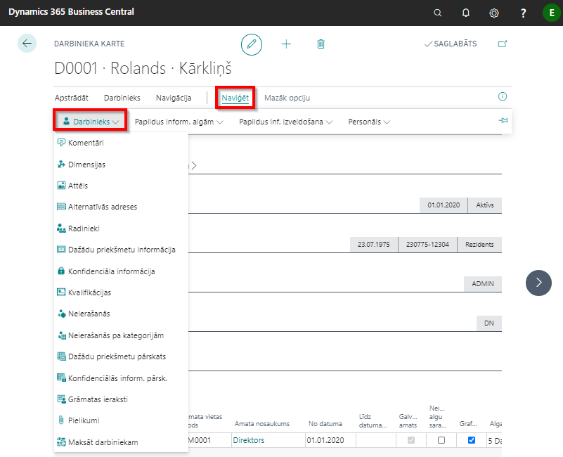
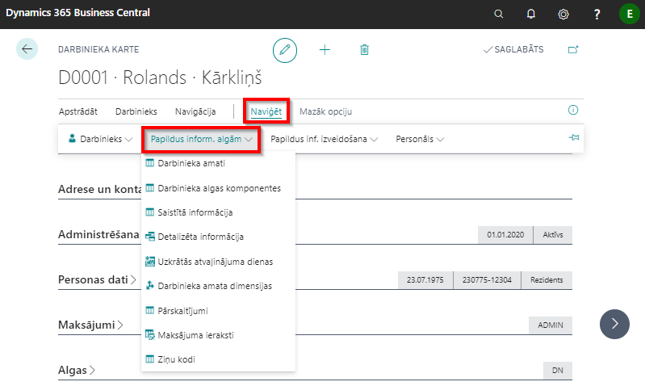
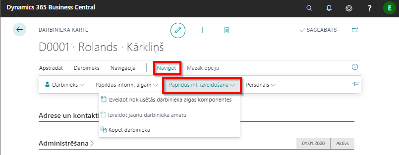
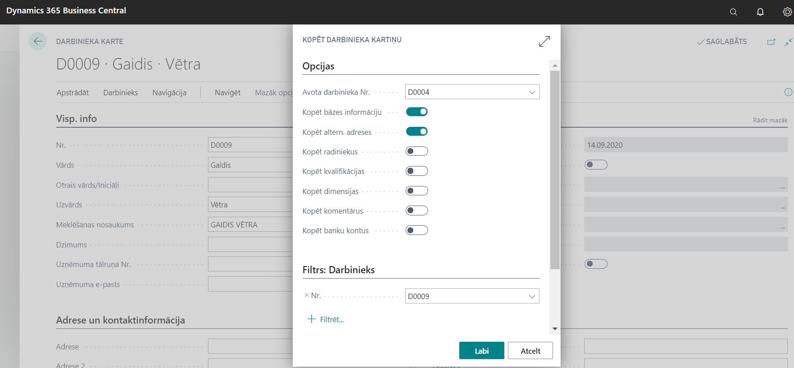

Papildus informācijas ievadīšana
  
Kvalifikācija
Kvalifikācijas klasifikators
Lai aizpildītu informāciju par darbinieka kvalifikāciju, sākumā jāizveido kvalifikācijas klasifikators. Kvalifikācijas klasifikatoru atradīsiet, ja sistēmas meklētājā ierakstīsiet Kvalifikācijas.
Kvalifikācijas kodus ievada katru jaunā rindiņā, norādot brīvi izvēlētu kodu ( ) un attiecīgās kvalifikācijas aprakstu (
) un attiecīgās kvalifikācijas aprakstu ( ). Ja laukā Kvalificēti darbinieki (
). Ja laukā Kvalificēti darbinieki ( ) ir atzīme Jā, tad klikšķinot uz saites var apskatīt sarakstu, kuriem darbiniekiem ir piešķirta šī konkrētā kvalifikācija.
) ir atzīme Jā, tad klikšķinot uz saites var apskatīt sarakstu, kuriem darbiniekiem ir piešķirta šī konkrētā kvalifikācija.

Darbinieka kvalifikācija
Kad visa informācija ir ievadīta, tad var definēt darbinieka kvalifikāciju. Atver nepieciešamā darbinieka kartiņu un izvēlas Darbinieka kartiņas rīkjoslā Naviģēt - Darbinieks - Kvalifikācijas.

| Lauka nosaukums | Apraksts |
|---|---|
| Kvalifikācijas kods | Kods no kvalifikāciju klasifikatora. |
| No datuma | Kvalifikācijas iegūšanas datums. |
| Līdz datumam | Kvalifikācija spēkā līdz. |
| Tips | Izvēlas izcelsmi: iekšēja, ārēja, no iepriekšējās darba vietas. |
| Apraksts | Izglītības veida apraksts, aizpildās no kvalifikāciju klasifikatora. |
| Institūcija/Uzņēmums | Ārējas kvalifikācijas izcelsmes iestādes nosaukums. |
| Komentārs | Atzīme par to, ka ierakstam ir pievienots komentārs. |
Kopēt darbinieku
Kopēšanas funkciju ir ērti izmantot, ja darbinieks pēc atbrīvošanas ir atkārtoti uzsācis darbu uzņēmumā. Lai izvairītos no iespējamām kļūdām (piemēram, vidējās izpeļņas aprēķinā, paziņojumā par fiziskajām personām izmaksātajām summām), ir ieteicams veidot jaunu darbinieka kartiņu. Lai veiktu kopēšanu, vispirms ir jāizveido jauna darbinieka kartiņa. Darbinieka kartiņas rīkjoslā spiež uz Naviģēt - Papapildus inf. izveidošana -Kopēt darbinieku. Sadaļā Opcijas ir jāizvēlas Avota darbinieka Nr., kā arī jāatzīmē kādu informāciju vēlas kopēt.

Darbinieka ziņu kodi
Darbinieka kartiņas rīkjoslā Naviģēt - Papildus inform. algām ir pieejama funkcija Ziņu kodi, kur var apskatīt un rediģēt darbiniekam piesaistītos ziņu kodus, pamatojoties uz kuriem tiek veidota atskaite Ziņas par darba ņēmējiem.
Sociālo ziņu kods jāievada caur Darba līguma karti, Pieņemšanas rīkojuma karti, atbrīvošanas rīkojuma karti un amata maiņas rīkojuma karti tam paredzētajos laukos. Ziņu kodus par bērna kopšanas atvaļinājuma un atvaļinājuma bez darba algas saglabāšanas sākumu iespējams nodefinēt Algas-Uzstādījumi-Prombūtnes iemesli laukā Prombūtnes sāk. ziņu kods un Darba atsākšanas ziņu kods.
Pievienotie faili
Nepieciešamības gadījumā pie darbinieka kartiņas sistēmā ir iespējams pievienot failus jebkurā formātā (piemēram, CV, diplomus un citus dokumentus). Funkcionalitāte ir pieejama darbinieku kartiņas rīkjoslā Naviģēt - Darbinieks - Pielikumi.